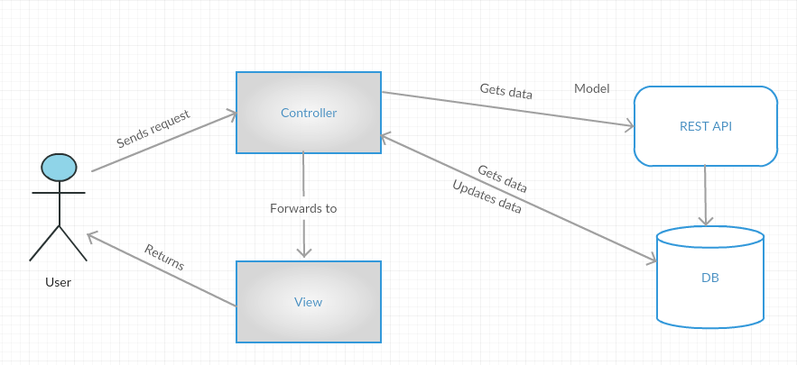
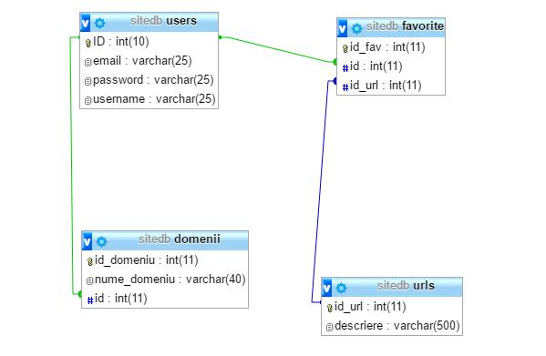

Resource Interactive eXplorer
Introducere
Numele aplicatiei ce urmeaza sa o dezvoltam este Resource Interactive eXplorer, ce urmareste a fi un instrument Web de colectare, de regasire si de vizualizare a informatiilor referitoare la resurse stiintifice si/sau tehnologice (articole, carti, rapoarte tehnice, prezentari, cod-sursa si altele) ale utilizatorilor din domeniul informaticii.
Dezvoltand o aplicatie de tip mash-up, se vor oferi informatii de interes pentru o anumita persoana, pornind de la resursele multimedia deja colectate si clasificate (eventual, prin tagging) via aplicatii Web sociale precum Feedly, GitHub, Google Scholar, Lynrd, Pocket, Slideshare, Vimeo etc. Informatiile (structurate pe diverse criterii) vor fi vizualizate/redate in formate precum HTML, SVG sau text obisnuit. De asemenea, sistemul va oferi acces la informatii prin intermediul unui API REST.
Prezentare generala a aplicatiei
Aplicatia va fi usor de utilizat deoarece functionalitatile sale de baza vor permite utilizatorilor sa aiba acces la informatii utile si personalizate. Interfata propusa se doreste a fi atat atractiva, cat si discreta, pentru ca focusul utilizatorului sa fie mentinut pe continut.
Prima pagina a aplicatiei va permite oricarui utilizator sa vizualizeze stirile oferite de API-urile alese, insa fara posibilitatea de a le filtra. Pentru a putea vizualiza doar stiri din subdomeniile preferate, un utilizator va trebui sa isi creeze un cont. In momentul creerii contului, utilizatorul va putea sa isi aleaga doar acele subdomenii de care este interesat.
Atunci cand este inregistrat, un utilizator isi va putea modifica preferintele in legatura cu subdomeniile preferate. De asemenea, va putea mentine o arhiva a stirilor preferate, apasand butonul de "Like" aflat sub fiecare stire.
Prezentarea interfetei aplicatiei
Prima pagina a aplicatie contine meniul format din logo, referinta catre sectiunea "About Us", referinta catre sectiunea "Contact" si un buton de logare. Daca un utlizator nu are cont, acesta poate accesa Login-ul si va declansa deschiderea modalului de logare, dupa care va apasa butonul de "Sign up" si va declansa deschiderea celui de al doilea modal, format din 2 pasi: primul pas este pentru completarea datelor personale, iar al doilea pentru selectarea subdomeniilor de care este interesat si despre care doreste sa vizualizeze stiri.
Dupa logarea cu succes, utilizatorul va fi directionat pe o pagina unde va avea acces la informatii personalizate. Meniul acestei pagini contine in plus sectiunea "My Favorites", ce permite accesarea a doua butoane: "My Prefered News", ce va directiona utilizatorul spre o pagina unde va putea vizualiza stirile preferate (acele stiri la care a accesat "Like") si "Add New Preferences" ce va declansa deschiderea unui modal ce ii va permite sa isi modifice subdomeniile preferate.
In plus fata de prima pagina a aplicatiei, exista si un field "Search" pentru cautarea anumitor stiri.
Daca un utilizator doreste sa acceseze o stire din cele prezentate pe aceasta pagina, acesta va fi directionat pe o pagina ce va contine stirea in intregime.
Arhitectura aplicatiei

In aplicatia noastra, vom folosi pentru implementare, framework-ul Laravel. Am ales acest framework deoarece ne ofera o documentatie oficiala foarte bogata si cel mai important, deoarece ne permite sa implementam aplicatia dupa modelul arhitectural MVC. Laravel are numeroase functionalitati care-l transforma intr-un framework extrem de puternic:
- Are Facades(clase ale caror metode pot fi apelate ca si metode statice, ex: Route::get(), Input::get(), Input::all() si multe altele).
- Are ORM(Object Relational Mapping), deci poti transforma $articole = DB::table('articole')->get(); in $articole = Articol::all();. Un ORM ofera numeroase functionalitati ce-ti confera un control imens asupra aplicatiei.
Etapele intermediare ale dezvoltării proiectului
API (Application Program Interface) este un set de protocoale și instrumente pentru crearea de aplicații software. Un API specifică modul în care componentele software ar trebui să interacționeze, astfel un API bun ne ajută să dezvoltăm mai ușor aplicația prin furnizarea altor elemente software. Trebuie sã cunoaștem adresa URL a furnizorului de servicii și metodele prin care avem acces la serviciul oferit (nume, parametri, rezultat). Interfața API este limitatã la câteva operații în cazul serviciilor de tip REST.
In implementarea aplicatiei vom utiliza un API oferit de Embedly pentru a converti URL-uri in clipuri video, imagini sau articole ce provin de pe diverse site-uri. Embed ne permite sa incorporam cu usurinta in aplicatia noastra continut de pe Youtube, Vimeo, Vine, Flickr prin intermendiul API-ului oEmbed, sa extragem continut prin API-ul Extract, sa afisam continut prin Display API, iar prin Video API putem incarca si reda fisierele video.
- oEmbed URL: https://api.embedly.com/1/oembed. Acest API este utilizat pentru incorporarea de continut de la orice adresa URL.Foloseste metoda GET.
- Extract URL: https://api.embedly.com/1/extract. Ne permite sa extragem articole si sa preluam mai multe metadate despre acestea. Foloseste metoda GET.
- Display URL: https://i.embed.ly/1/display. Este un proxy care ne perminte sa incorporam imagini nesigure in pagini securizate, fara avertisment si foloseste o imagine alternativa pentru imaginile care nu au fost gasite. Foloseste metoda GET.
- Video URL: https://upload.embed.ly/1/video. Utilizand acest API recurgem la o modalitate rapida si scalabila pentru a incarca si reda fisierele video din aplicatia noastra. Acesta foloseste metoda POST.
Pentru a colecta informații disponibile pe SlideShare vom utiliza următoarele metode API:
- Get SlideShare Infomation URL: https://www.slideshare.net/api/2/get_slideshow. Acesta este utilizat pentru a obtine informatii despre prezentari.
- Get Slideshows By Tag URL: https://www.slideshare.net/api/2/get_slideshows_by_tag. Acesta este utilizat pentru a obtine prezentari pe baza tag-urilor.
- Get Slideshows By User URL: https://www.slideshare.net/api/2/get_slideshows_by_user. Acesta este utilizat pentru a obtine prezentari pe baza user-ilor.
Parametri necesari
-slideshow_id: id-ul prezentarii care va fi preluata
-slideshow_url: URL prezentarii care va fi preluata. Acesta este necesar daca slideshow_id nu este setata. Daca amebele sunt setate, slideshow_id are prioritate.
Parametri necesari
-tag: Parametru ce specifica numele tag-ului prezentarii respective.
Parametri necesari
-username_for: Reprezinta numele utilizatorului care este proprietarul respectivei prezentari. SlideShare permite incarcarea a cel mult 100 de prezentari pe zi.Deasemenea, in cadrul proiectului vor fi tratate diferitele erori aruncate de API-uri (ex. No API Key Provided, Tag Not Found).
Pentru a colecta informații disponibile pe Pocket trebuie sa obtinem autorizatie de la serverul Pocket facand un POST request.
Vom folosi metoda URL: https://getpocket.com/v3/oauth/request/
Parametri
-consumer_key: Este un string ce reprezinta cheia oferita pentru aplicatia noastra
-redirect_uri: Un string ce reprezinta un URL care va fi apelat cand procesul de autorizare este complet. Acest URL ar trebuie sa ne directioneze inapoi la aplicatia nostra
-state: Parametru optional. Este un string de metadate utilizate de aplicatia noastra.
In aplicatia noastra vom include si unele API-uri oferite de Youtube pentru incarcarea unor clipuri video, a comentariilor aferentele acestora precum si pentru a gestiona un play-list.
Vom face o cerere HTTP, apeland GET la URL-ul https://www.googleapis.com/youtube/v3/videos
Parametri necesari
-part: Este un string ce reprezinta o lista cu proprietatile resursei video, separate prin virgula.
-chart: Acest parametru identifica diagrama pe care dorim sa o preluam
-id: Un parametru de tip string ce reprezinta lista id-urilor videoclipurilor de pe Youtube pentru resursele pe care dorim sa le preluam.
-myRating: Acesta poate fi utilizat doar intr-o cerere autorizata. Poate fi setat cu valorile like sau dislike, astfel API-ul returneaza clipurile in functie de aceasta valoare.
Pentru stocarea datelor in cadrul aplicatiei vom folosi ca suport sistemul de gestiune MySQL incorporate in cadrul aplicatiei phpMyAdmin. Acest sistem de gestiune contine extensia MySQLi, ce impreuna cu PHP 5, ofera o serie de functii ce ajuta la accesarea facila bazelor de date.
Baza de date va stoca date precum: datele de inregistrare a administratorilor, ale utilizatorilor aplicatiei si date optionale, alese de utilizatori la inregistrarea in aplicatie. Aceste date vor fi retinute intr-o tabela USERS, ce va contine campuri precum : id ( cheie unica asignat automat fiecarui utilizator), nume, email si parola ( date ce sunt completate de utilizator la inregistrarea in aplicatie). De asemenea, intr-o alta tabela Domenii vor fi retinute preferintele care pot fi alese de fiecare utilizator la inregistrarea in aplicatie. Aceasta a doua tabela va retine numele domeniilor impreuna cu id-ul utilizatorului care l-a ales(cheie straina din tabela Users) . Astfel un utilizator isi va putea accesa cu usurinta lista cu preferinte alese si va mai putea adauga si altele.
Pentru a stabili conexiunea cu baza de date si de a executa instructiune precum INSERT, UPDATE, DELETE, SELECT, MySQLi ofera comezi precum:
- mysqli_connect("localhost",”nume_utilizator”,”parola”,”nume_BD”) - stabileste conexiunea cu baza de date, unde numele de utilizator si parola sunt datele de conectare in aplicatia phpMyAdmin, iar numele bazei de data reprezinta numele dat directorului in care se gasesc tabelele pentru aplicatia noastra.
- mysqli_connect_errno() - verifica daca conexiunea s-a realizat cu succes, in caz contrar va expune eroarea intalnita cu ajutorul functiei mysqli_connect_error()
- mysqli_query($conn, $sql) - va executa interogarea $sql daca conexiunea $conn a fost stabilita cu succes
- mysqli_num_rows($result) - va verifica daca interogarea a returnat cel putin un rand. In caz afirmativ, pentru autetificare, numele si parola vor fi validate si utilizatorului i se va permite accesul pe pagina profilului sau. In caz contrar, daca nici un rand nu a fost returnat, inseamna ca numele si parola introduse nu au fost gasite in baza de date si utilizatorului i se va cere reintroducerea datelor. De asemenea, exista posibilitatea ca interogarea sa nu poata fi executata, caz in care, va fi returnata o eroare cu ajutorul functiei mysqli_error($conn).
- mysqli_close($conn) - va inchide conexiunea cu baza de date atunci cand toate interogarile dorite au fost executate
Pentru a preveni SQL Injection, inainte de a folosi datele introduse de catre utilizatori, le vom filtra si verifica daca sunt de tipul corect sau daca contin caractere diferite de cele ce trebuie introduse. Vom folosi functii precum:
- $data=trim($data) - sterge spatiile dinaintea si dupa sirul de caractere introdus
- $data = stripslashes($data) - sterge caracterele '\'
- $data = htmlspecialchars($data)
- preg_match("/^[a-zA-Z ]*$/",$data) - filtreaza date precum username-ul sau parola
- filter_var($email, FILTER_VALIDATE_EMAIL) - filtreaza email-ul
O alta modalitate de a preveni SQL Injection este accea de a da drepturi cat mai putin utilizatorilor aplicatiei asupra bazei de date. Conexiunea cu baza de date nu se face ca si superuser, ci ca un utilizator ce are doar drepturile ce ii permit vizualizarea si inserarea. Totodata, aplicatia nu permite afisarea de date specifice a bazei de date si foloseste un sistem de raportare a erorilor care este ascunsa de utilizatorul obisnuit.
Membrii echipei
Cretu Ana se va ocupa de partea de baze de date.
Gusa Diana si Iacob Madalina se vor ocupa de managerierea si implementare metodelor aferente API-urilor necesare aplicatiei mash-up si implementarea acestora utilizand framework-ul Laravel.
Lingurariu Georgiana s-a ocupat de partea de interfata a aplicatiei, arhitectura generala si functionalitatile ce sunt necesare aplicatiei. Pe partea de back-end se va ocupa de metodele necesare cautarii in baza de date atunci cand se acceseaza "Search-ul" de catre utilizator.